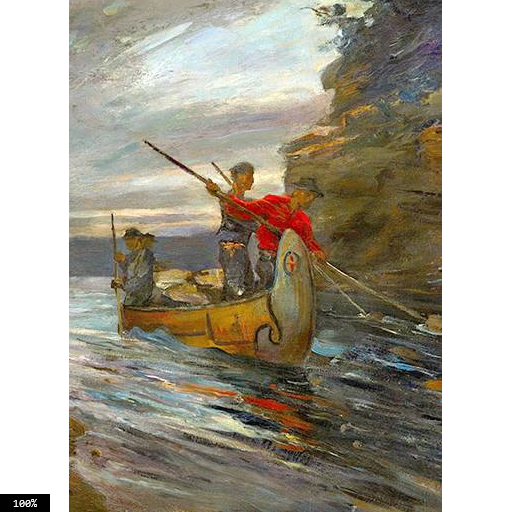
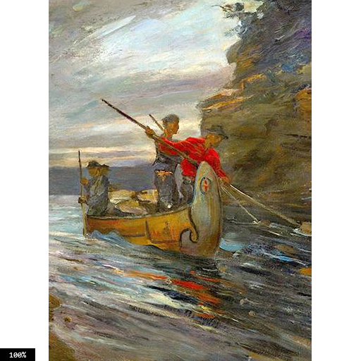

What is a Treaty
"Treaty, a binding formal agreement, contract, or other written instrument that establishes obligations between two or more subjects of international law (primarily states and international organizations)"
Britannica Treaty.caWhat is Treaty 1
"Treaty One Nation is composed of the seven First Nations who are signatories to the first of the numbered Treaties, originally signed on August 3, 1871 at Lower Fort Garry after several days of discussions and ceremonies."
Treaty One.caSignificance of Treaty 1
The signing of Treaty 1 signalled the start of a protracted series of treaties that would follow over the ensuing two decades, indicating the Canadian government's growing interest in the West as more than just a trading hub but also as an area suitable for developing agriculture and housing growing populations of settlers as well as a peaceful way to annex land. The pact will allow Governor Adams Archibald to establish industries like mills and farms on the lush area surrounding Lakes Winnipeg and Manitoba as well as in the Red River Valley

Goals
Both the local indigenous people and Canadian government authorities wanted to ensure the security of their lands and resources, which led to the establishment of the treaty. With the rush of newcomers, the Anishinabe and Swampy Cree Nations tried to preserve their precious grounds while gaining stability in the transition to a new way of life.
Canadian Government Failed indigenous peoples
"Within a year of the agreement, however, the indigenous communities approached the Canadian government declaring that a number of the items promised, which would become known as the “Outside Promises”, within the treaty had not been handed over to them yet, although subjects of the Crown continued to settle the land-based upon the agreed-upon Treaty. On April 30, 1875, a council of the federal government passed an order stating that it must be ensured that all of the Outside Promises were to be fulfilled and considered a part of the main agreements within Treaty 1. However, due to the different intentions and understandings of the Canadian officials and the indigenous communities at the time of its creation, this treaty continues to be considered controversial well into the 21st century."
Wikipedia Treaty One.ca